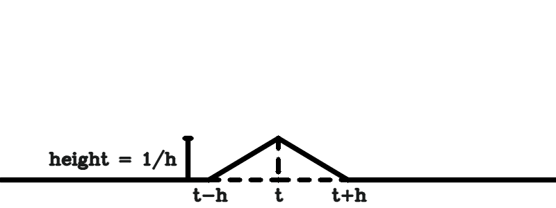
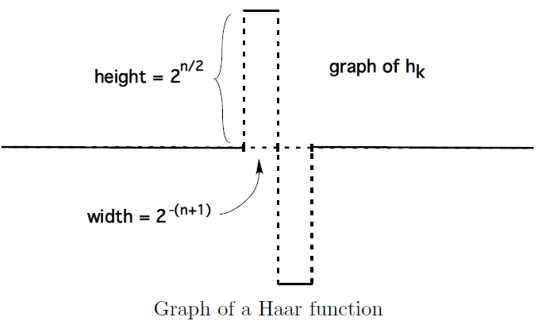
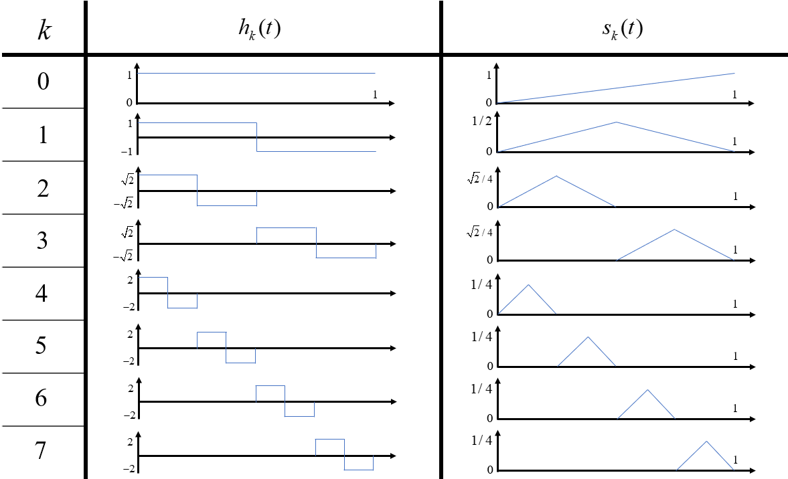
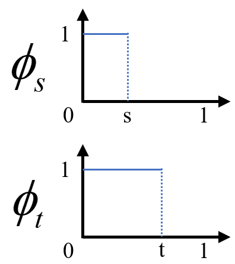

Brownian Motion and "White Noise"
Part of note of An Introduction to Stochastic Differential Equations , Lawrence C. Evans
Motivation
Some History
布朗运动 (brownian motion) 是一种具有连续时间参数和连续状态空间的随机过程。考虑充满清水的长细管，\(t=0\) \(x=0\)
\[
u(x, 0) = \delta_0
\]
\(\delta_0\) \(0\) Dirac point mass
\[
\delta_0(x) = \begin{cases}
1, & x = 0\\
0, & x \neq 0
\end{cases}
\]
墨水随着时间的推移，将会在管道中扩散。设一段短时间 \(\tau\) \(x\) \(x+y\) \(f(y, \tau)\)
\[
\begin{aligned}
u(x, t + \tau)
&= \int_{-\infty}^{+\infty} u(x-y, t) f(y, \tau) \mathrm{d}y\\
&= \int_{-\infty}^{+\infty} \left( u - u_x y + \frac{1}{2} u_{xx} y^2 + \cdots \right) f(y, \tau) \mathrm{d}y\\
\end{aligned}
\]
这里对偏导用了简记，即
\[
u_x = \frac{\partial u}{\partial x}(x, t), \quad u_{xx} = \frac{\partial^2 u}{\partial x^2}(x, t)
\]
这个式子实际上把 \(u(x, t+\tau)\) 各阶矩的线性组合 ，下面开始考虑其各阶矩的值。
零至二阶矩的考虑
零阶矩 \(\int_{-\infty}^{+\infty} f(y, \tau) \mathrm{d}y = 1\)
由对称性 \(f(y, \tau) = f(-y, \tau)\) \(f\) \(y\) ） ，\(f(y, \tau)\) \(y\)
\[
\int_{-\infty}^{+\infty} y f(y, \tau) \mathrm{d}y = 0
\]
\(y f(y, \tau)\) \(y\) \(0\)
考虑二阶矩（方差） ，假定 关于 \(\tau\) 线性 的
\[
\int_{-\infty}^{+\infty} y^2 f(y, \tau) \mathrm{d}y = D\tau
\]
这里的 \(D>0\)
Remark
这里给出了一个重要假设：方差关于 \(\tau\)
二阶以上的矩都省去，则原式可化为
\[
\frac{u(x, t+\tau) - u(x, t)}{\tau} = \frac{D}{2}u_{xx}(x, t)
\]
令 \(\tau\to 0^+\)
\[
u_t=\frac{D}{2}u_{xx}
\]
这就是扩散方程 (diffusion equation) ，也称热方程 (heat equation) 。在同作者的 PDE 2.3 \(u(x, 0)=\delta_0\)
\[
u(x, t) = \frac{1}{(2\pi Dt)^{1/2}}e^{-\frac{x^2}{2Dt}}
= \frac{1}{\sqrt{Dt} \sqrt{2\pi}}e^{-\frac{x^2}{2(\sqrt{Dt})^2}}
\]
从中可见，在 \(t\) \(N(0, Dt)\) \(D\) Einstein relation
\[
D=\mu k_B T
\]
各符号的解释
\(\mu\) : “流动性 (mobility) \(v_d/F\)
\(v_d\) terminal drift velocity\(F\)
\(k_B\) : Boltzmann \(T\) :
在本书中，则把这个关系写为
\[
D=\frac{RT}{N_Af}
\]
各符号的解释
\(R\) \(N_A\) (Avogadro constant) \(R = k_BN_A\) \(f\) \(F=fv_d=v_d/\mu\)
Random Walks
随机游走 (random walks) 也可以用于导出扩散方程。考虑横坐标为空间 \(x\) \(t\) \(\Delta x\) \(\Delta\) \(\Delta t\) \(1/2\) / \(\Delta x\) \((m, n)\) \(n\Delta t\) \(m\Delta x\)
\[
p(m, 0) = \begin{cases}
0, &m\neq 0\\
1, &m=0
\end{cases}
\]
考虑状态转移，有
\[
p(m, n+1) = \frac{1}{2}p(m-1, n) + \frac{1}{2}p(m+1, n)
\]
因此就有
\[
\begin{aligned}
p(m, n+1) - p(m, n)
&= \frac{1}{2}p(m-1, n) + \frac{1}{2}p(m+1, n) - p(m, n)\\
&= \frac{1}{2}\left( p(m-1, n) - 2p(m, n) + p(m+1, n) \right)
\end{aligned}
\]
Important Assumption
假设空间尺度和时间尺度满足如下关系
\[
\frac{(\Delta x)^2}{\Delta t}=D\quad\text{for some positive constant }D
\]
这样就有
\[
\begin{aligned}
\frac{p(m, n+1) - p(m, n)}{\Delta t}
&= \frac{1}{2}\left( \frac{p(m-1, n) - 2p(m, n) + p(m+1, n)}{(\Delta x)^2} \right)\\
&= \frac{D}{2}\left( \frac{p(m-1, n) - 2p(m, n) + p(m+1, n)}{(\Delta x)^2} \right)
\end{aligned}
\]
令 \(\Delta x\to 0\) \(\Delta t\to 0\) ，\(m\Delta x\to x\) ，\(n\Delta t\to t\) ，这样就有 \(p(m, n)\to u(x, t)\)
\[
u_t = \frac{D}{2}u_{xx}
\]
于是我们重新获得了扩散方程。
Mathematical Justification
利用 De Moivre-Laplace
使用随机变量 \(X(t)\) \(t=n\Delta t\) \(n\)
\[
S_n = \sum_{k=1}^n \xi_k
\]
这里 \(\xi_k\) \(p=1/2\)
\[
\begin{cases}
P(\xi_k=1)=1/2\\
P(\xi_k=0)=1/2
\end{cases},\quad
Var(\xi_k)=p(1-p)=\frac{1}{4}
\]
可以得到
\[
X(t)=S_n\Delta x + (n-S_n)\Delta x = (2S_n-n)\Delta x
\]
研究其方差，发现有
\[
\begin{aligned}
Var(X(t))
&= 4(\Delta x)^2Var(S_n)\\
&= 4(\Delta x)^2(nVar(\xi_1))\\
&= n(\Delta x)^2 \\
&= \frac{(\Delta x)^2}{\Delta t}t
\end{aligned}
\]
Remark
由此可以注意到，Einstein 的研究中令方差关于 \(\tau\) \((\Delta x)^2\) \(\Delta t\)
\[
X(t) = (2S_n - n)\Delta x
= \frac{S_n - \frac{n}{2}}{\sqrt{\frac{n}{4}}} \sqrt{n} \Delta x
= \frac{S_n - \frac{n}{2}}{\sqrt{\frac{n}{4}}} \sqrt{tD}
\]
然后利用 De Moivre-Laplace
\[
\begin{aligned}
\lim_{\substack{n\to\infty \\ t=n\Delta t,\; \frac{(\Delta x)^2}{\Delta t}=D}}P\left(a\leqslant X(t)\leqslant b\right)
&= \lim_{n\to \infty}\left( \frac{a}{\sqrt{tD}}\leqslant \frac{S_n - \frac{n}{2}}{\sqrt{\frac{n}{4}}}\leqslant \frac{b}{\sqrt{tD}} \right) \\
&= \frac{1}{\sqrt{2\pi}}\int_{a/\sqrt{tD}}^{b/\sqrt{tD}}e^{-\frac{x^2}{2}}\mathrm{d}x\\
&= \frac{1}{\sqrt{2\pi tD}}\int_a^b e^{-\frac{x^2}{2tD}}\mathrm{d}x
\end{aligned}
\]
由于 \(S_n\) De Moivre-Laplace LindebergLévy 中心极限定理
再次导出 \(t\) \(N(0, Dt)\)
Definition, Elementary Properties
Definition & Computation
Brownian Motion/Wiener Process
布朗运动 (Brownian motion) ，或维恩过程 (Wiener process) 是满足如下条件的实值随机过程 \(W(\cdot)\)
\(W(0)=0\) a.s.(Gaussian increments) \(W(t) - W(s)\sim N(0, t-s), \quad \forall\; t\geqslant s\geqslant 0\)
(independent increments) \(W(t_1), W(t_2) - W(t_1), \cdots, W(t_n) - W(t_{n-1})\) are independent for all times \(0\leqslant t_1 < t_2 < \cdots < t_n\)
中心极限定理提供了如此定义布朗运动的动机：由一系列合适地缩放了的独立随机分布的和构成的位置随机变量，服从正态分布。
给出布朗运动的定义之后，应当得到相关的计算方式。从一个简单的问题出发，计算联合概率，即给定 \([a_i, b_i], t_i, i=1, \cdots, n\)
\[
P(a_1\leqslant W(t_1)\leqslant b_1, \cdots, a_n\leqslant W(t_n)\leqslant b_n)
\]
首先最基础的，对于 \(\forall t > 0\) \(a\leqslant b\) \(W(0)=0\) Gaussian increments
\[
P(a\leqslant W(t)\leqslant b) = \frac{1}{\sqrt{2\pi t}} \int_a^b e^{-\frac{x^2}{2t}}\mathrm{d}x
\]
取 \(t=t_1\) , \([a, b] = [a_1, b_1]\) \(P(a_1\leqslant W(t_1)\leqslant b_1)\) \(W(t_1)=x_1\) Gaussian increments
\[
P(a_2\leqslant W(t_2)\leqslant b_2 | W(t_1)=x_1) = \int_{a_2}^{b_2} \frac{1}{\sqrt{2\pi(t_2-t_1)}}e^{-\frac{(x_2-x_1)^2}{2(t_2-t_1)}}\mathrm{d}x
\]
定义
\[
g(x, t\mid y) = \frac{1}{\sqrt{2\pi t}}e^{-\frac{(x-y)^2}{2t}}
\]
那就有
\[
P(a_1\leqslant W(t_1)\leqslant b_1, a_2\leqslant W(t_2)\leqslant b_2)
= \int_{a_1}^{b_1} \int_{a_2}^{b_2} g(x_1, t_1\mid 0) g(x_2, t_2 - t_1 \mid x_1) \mathrm{d}x_2\mathrm{d}x_1
\]
以此类推，那就有
\[
\begin{aligned}
&P(a_1\leqslant W(t_1)\leqslant b_1, \cdots, a_n\leqslant W(t_n)\leqslant b_n) \\
= &\int_{a_1}^{b_1}\cdots \int_{a_n}^{b_n} g(x_1, t_1\mid 0) g(x_2, t_2 - t_1 \mid x_1)\cdots g(x_n, t_n - t_{n-1} \mid x_{n-1}) \mathrm{d}x_n\cdots\mathrm{d}x_1
\end{aligned}
\]
更一般地，以上这个计算的式子是以下定理中 \(f(x_1, \cdots, x_n)=\chi_{[a_1, b_1]}(x_1)\cdots \chi_{[a_n, b_n]}(x_n)\)
一维布朗运动的计算
设 \(W(\cdot)\) \(\forall n\in \mathbb{N}^+\) , \(0=t_0<t_1<\cdots<t_n\) , \(f:\mathbb{R}^n\to\mathbb{R}\)
\[
\begin{aligned}
& \mathbb{E}(f(W(t_1), \cdots, W(t_n))) \\
=& \int_{-\infty}^{\infty}\cdots \int_{-\infty}^{\infty} f(x_1, \cdots, x_n) g(x_1, t_1\mid 0) g(x_2, t_2 - t_1 \mid x_1)\cdots g(x_n, t_n - t_{n-1} \mid x_{n-1}) \mathrm{d}x_n\cdots\mathrm{d}x_1
\end{aligned}
\]
Proof
记 \(X_i:= W(t_1), Y_i:=X_i-X_{i-1}, i=1, \cdots, n\)
\[
h(y_1, \cdots, y_n) := f(y_1, y_1 + y_2, \cdots, y_1 + \cdots + y_n)
\]
好处是 \(Y_i\sim N(0, t_i - t_{i-1})\)
则有
\[
\begin{aligned}
& \mathbb{E}(f(W(t_1), \cdots, W(t_n))) = \mathbb{E} h(Y_1, \cdots, Y_n) \\
=& \int_{-\infty}^{\infty}\cdots \int_{-\infty}^{\infty} h(y_1, \cdots, y_n) g(y_1, t_1\mid 0) g(y_2, t_2 - t_1 \mid 0)\cdots g(y_n, t_n - t_{n-1} \mid 0) \mathrm{d}y_n\cdots\mathrm{d}y_1 \\
=& \int_{-\infty}^{\infty}\cdots \int_{-\infty}^{\infty} f(x_1, \cdots, x_n) g(x_1, t_1\mid 0) g(x_2, t_2 - t_1 \mid x_1)\cdots g(x_n, t_n - t_{n-1} \mid x_{n-1}) \mathrm{d}x_n\cdots\mathrm{d}x_1
\end{aligned}
\]
More on White Noise
本节的内容旨在提供对白噪声更多的一些直觉。首先为了计算方便，先证明如下引理：
一维布朗运动的期望计算性质
设 \(W(\cdot)\)
\[
\begin{gathered}
\mathbb{E}(W(t)) = 0 ,\quad \mathbb{E}(W^2 (t)) = t, \quad \forall t\geqslant 0 \\
\mathbb{E}(W(t)W(s)) = t \wedge s = \min\{t, s\},\quad \forall t, s \geqslant 0
\end{gathered}
\]
\(t \wedge s := \min\{t, s\}\)
Proof
由于 \(W(t)\sim N(0, t)\) \(t\geqslant s\) ） ，则
\[
\begin{aligned}
\mathbb{E}(W(t)W(s))
&= \mathbb{E}((W(s) + W(t) - W(s))W(s)) \\
&= \mathbb{E}(W^2(s)) + \mathbb{E}((W(t) - W(s))W(s)) \\
&= s + \mathbb{E}(W(t) - W(s))\mathbb{E}(W(s)) \\
&= s
\end{aligned}
\]
注意，倒数第三行到倒数第二行利用了 \(W(t)-W(s)\sim N(0, t-s)\) \(W(s)\sim N(0, s)\)
接下来将阐述白噪声为什么“白”。不正式地，给出如下启发 (heuristic)
\[
\mathbb{E}(\xi(t)\xi(s)) = \delta_0(s-t)
\]
注意 \(\delta_0(x)\) Dirac delta function
Informal Proof
设 \(\:h>0\) , \(t>0\)
\[
\begin{aligned}
\phi_h(s)
&:= \mathbb{E}\left(
\left(\frac{W(t+h) - W(t)}{h}\right)
\left(\frac{W(s+h) - W(s)}{h}\right)
\right) \\
&= \frac{1}{h^2}\left[
\mathbb{E}(W(t+h)W(s+h)) - \mathbb{E}(W(t+h)W(s)) - \mathbb{E}(W(t)W(s+h)) + \mathbb{E}(W(t)W(s))
\right] \\
&= \frac{1}{h^2}\left[
(t+h)\wedge(s+h) - (t+h)\wedge s - t\wedge(s+h) + t\wedge s
\right]
\end{aligned}
\]
分类讨论，容易得到 \(\phi_h(s)\)

可以注意到，\(\phi_h(s)\) \(\phi_h\geqslant 0\)
\[
\int_{-\infty}^{+\infty} \phi_h(s) \mathrm{d}s =
\frac{1}{2} \cdot (2h) \cdot \frac{1}{h} = 1
\]
可以看出，当 \(h\to 0^+\) \(\phi_h(s)\) \(\delta_0(s-t)\) \(h\to 0^+\) \(\phi_h(s)\) \(\mathbb{E}(\xi(t)\xi(s))\)
在最后阐释“白”噪声之前，我们需要先引入自相关 (autocorrelation) (wide-sense stationary)
自相关函数
对于满足 \(\:\mathbb{E}(X^2(t)) < \infty\) , \(t\geqslant 0\:\) \(X(\cdot)\)
\[
r(t, s) := \mathbb{E}(X(t)X(s))
\]
为 \(X(\cdot)\) (autocorrelation function)
广义平稳
对于满足 \(\:\mathbb{E}(X^2(t)) < \infty\) , \(t\geqslant 0\:\) \(X(\cdot)\) \(c: \mathbb{R}\to \mathbb{R}\)
\[
r(t, s) = c(t-s), \quad
\mathbb{E}(X(t)) = \mathbb{E}(X(s)), \quad
\forall t, s\geqslant 0
\]
则称 \(X(\cdot)\) (wide-sense stationary)
对于任意广义平稳函数，将其自相关函数进行 Fourier (spectral density) \(f(\lambda)\)
\[
f(\lambda) = \frac{1}{2\pi}\int_{-\infty}^{+\infty} c(t)e^{-i\lambda t}\mathrm{d}t,\quad \lambda \in \mathbb{R}
\]
对于白噪声过程，根据前面的启发式公式，我们可以认为取 \(c(\cdot)=\delta_0\) \(\xi(\cdot)\)
\[
f(\lambda) = \frac{1}{2\pi}\int_{-\infty}^{+\infty} \delta_0(t)e^{-i\lambda t}\mathrm{d}t = \frac{1}{2\pi},\quad \forall \lambda \in \mathbb{R}
\]
可以看出白噪声过程的谱密度是常数，即所有“频率”在自相关函数的构成中的贡献相当。因此类比所有颜色的光在白光的构成中贡献相当，我们将 \(\xi(\cdot)\)
Construction of Brownian Motion
前面直接定义了符合什么性质的实值随机过程是布朗运动，并进一步研究了其一些简单性质，但是并没有证明布朗运动的存在性 ，即存在一个实值随机过程 \(W(\cdot)\)
本节将花大篇幅在 \([0, 1]\) \([0, 1]\) \([0, +\infty)\) \([0, 1]\)
选择一组 \(L^2(0, 1)\) 规范正交基 (orthonormal basis)，\(L^2(0, 1)\) \([0, 1]\) 2- 2.6
\(L^2(0, 1)\) 线性表示 ，会是级数的形式进一步地构造的布朗运动，依然会是级数的形式，需要证明该级数的一致收敛性
以上过程中用到了许多小波分析 (wavelet analysis)
Expansions in an orthonormal basis
对于基 \(\{\psi_n\}_{n=0}^{\infty}\)
\[
\int_0^1 \psi_n(s)\psi_m(s)\mathrm{d}s = \delta_{mn} = \begin{cases}
1, & m=n\\
0, & m\neq n
\end{cases},\quad \forall\: m, n
\]
将白噪声使用规范正交基 \(\{\psi_n\}_{n=0}^{\infty}\)
\[
\xi(t) = \sum_{n=0}^{\infty} A_n \psi_n(t)
\]
这里的系数 \(A_n\) \(\psi_n(t)\)
\[
A_n = \int_0^1 \xi(t)\psi_n(t)\mathrm{d}t
\]
构造时，我们希望 \(A_n\) 0
\[
\begin{aligned}
\mathbb{E}(A_nA_m)
& = \mathbb{E}\left( \int_0^1 \xi(t)\psi_n(t)\mathrm{d}t \int_0^1 \xi(s)\psi_m(s)\mathrm{d}s \right) \\
& = \int_0^1 \int_0^1 \mathbb{E}(\xi(t)\xi(s))\psi_n(t)\psi_m(s)\mathrm{d}t\mathrm{d}s \\
& = \int_0^1 \int_0^1 \delta_0(t-s)\psi_n(t)\psi_m(s)\mathrm{d}t\mathrm{d}s & \text{heuristic formula}\\
& = \int_0^1 \psi_n(t)\psi_m(t)\mathrm{d}t & \delta_0(t-s) = \begin{cases}
1, & t=s\\
0, & t\neq s
\end{cases}
\end{aligned}
\]
对于 \(m\neq n\) \(\mathbb{E}(A_n)=0\) \(\mathbb{E}(A_mA_n) = \mathbb{E}(A_m)\mathbb{E}(A_n)=0\) \(m=n\)
\[
\mathbb{E}(A_n^2) = \int_0^1 \psi_n^2(t)\mathrm{d}t
\]
要使其与规范正交基的定义一致，就需要 \(\mathbb{E}(A_n^2)=1\) \(Var(A_n)=\mathbb{E}(A_n^2) - \mathbb{E}(A_n)^2 = 1\)
综上可知，如果 i.i.d. \(A_n\sim N(0, 1)\) \(\{\psi_n\}_{n=0}^{\infty}\) \(\xi(t)=\sum A_n\psi_n(t)\) \(W(\cdot)\)
\[
W(t) := \int_0^t \xi(s)\mathrm{d}s = \sum_{n=0}^{\infty} A_n \int_0^t \psi_n(s)\mathrm{d}s
\]
尽管看起来任意规范正交基 \(\{\psi_n\}_{n=0}^{\infty}\) Haar functions
Construction of Brownian Motion
Haar Functions
Haar functions \(\{h_k(\cdot)\}_{k=0}^{\infty}\:\) \(L^2(0, 1)\) \(h_0\)
\[
h_0(t) := 1,\quad t\in [0, 1]
\]
然后对于 \(2^n\leqslant k < 2^{n+1}-1\) , \(n\in \mathbb{N}\)
\[
h_k(t) := \begin{cases}
2^{n/2}, & t\in [\frac{k-2^n}{2^n}, \frac{k-2^n+1/2}{2^n})\\
-2^{n/2}, & t\in [\frac{k-2^n+1/2}{2^n}, \frac{k-2^n+1}{2^n}]\\
0, & \text{otherwise}
\end{cases}
\]
对于单个 Haar function

为了更加形象地展示 Haar functions 8 Haar functions \(h_k(t)\) \(s_k(t)\)

Haar functions 的规范正交性 (Lemma 1)
Haar functions \(\{h_k(\cdot)\}_{k=0}^{\infty}\) 构成了 \(L^2(0, 1)\) (complete)
Proof
首先，显然有
\[
\int_0^1 h_k^2(t)\mathrm{d}t = 2^n \left(\frac{1}{2^{n+1}} + \frac{1}{2^{n+1}}\right) = 1
\]
考虑交叉相乘求积，设 \(l > k\) \(h_k\) \(h_l\) (support) \(\operatorname{supp}(h_l) \subseteq \operatorname{supp}(h_k)\) \(h_lh_k=0\)
\[
\int_0^1 h_l(t)h_k(t)\mathrm{d}t = \pm 2^{n/2}\int_0^1h_l(t)\mathrm{d}t = 0,\quad 2^n\leqslant k < 2^{n+1}
\]
支撑集 (support) Support (mathematics) - Wikipedia
现在规范正交性已经得到证明，下面需要证明的就是 \(\{h_k(\cdot)\}_{k=0}^{\infty}\) \(L^2(0, 1)\) 完全的基 。利用上已经证明的正交性，只需要证明 \(\forall f\in L^2(0, 1)\) \(\forall k\in \mathbb{N}^+\) \(\int_0^1 f(t)h_k(t)\mathrm{d}t = 0\) \(f=0\) a.e.
对于 \(k=0\) \(\int_0^1 f\mathrm{d}t = 0\) \(2^n\leqslant k < 2^{n+1}\)
对于 \(n=0\) \(k=1\) \(\int_0^{1/2} f\mathrm{d}t = \int_{1/2}^1 f\mathrm{d}t\) \(k=0\) \(\int_0^1 f\mathrm{d}t = (\int_0^{1/2} + \int_{1/2}^1)f\mathrm{d}t = 0\) \(\int_0^{1/2} f\mathrm{d}t = \int_{1/2}^1 f\mathrm{d}t = 0\)
同理，让 \(n\) \(\int_{k/2^{n+1}}^{(k+1)/2^{n+1}} f\mathrm{d}t = 0\) , \(\forall\: 0\leqslant k < 2^{n+1}\) \(\int_0^1 f\mathrm{d}t = 0\) \(f=0\) a.e.
由此，我们将构造
\[
W(t) := \sum_{k=0}^{\infty} A_k \int_0^t h_k(s)\mathrm{d}s
\]
为了证明所构造的 \(W(\cdot)\) \([0, 1]\)
Schauder function
\(k\) -th Schauder function \(s_k(t)\)
\[
s_k(t) := \int_0^t h_k(s)\mathrm{d}s, \quad 0\leqslant t\leqslant 1
\]
\(s_k(t)\) \(2^{-n/2-1}\)
\[
\max\limits_{0\leqslant t\leqslant 1} |s_k(t)| = 2^{-n/2-1},\quad 2^n \leqslant k < 2^{n+1}
\]
可以看出，\(s_k\) \(W(\cdot)\) \(W(\cdot)\)
Lemma 2
\(\forall\: 0\leqslant t, s \leqslant 1\) ，有
\[
\sum_{k=0}^{\infty} s_k(s)s_k(t) = s \wedge t
\]
Proof
定义
\[
\phi_s(\tau) := \begin{cases}
1, & 0 \leqslant \tau \leqslant s \\
0, & s < \tau \leqslant 1
\end{cases}
\]
考虑 \(\:0\leqslant s \leqslant t \leqslant 1\) , \(\phi_s\) \(\phi_t\)

因此，考虑 \(0\leqslant s, t\leqslant 1\)
\[
\int_0^1 \phi_s(\tau)\phi_t(\tau)\mathrm{d}\tau = s \wedge t
\]
另一方面，将 \(\phi_s\) \(\phi_t\) Haar functions
\[
\phi_s(\tau) = \sum_{k=0}^{\infty} a_kh_k(\tau),\quad \phi_t(\tau) = \sum_{k=0}^{\infty} b_kh_k(\tau)
\]
这样就有
\[
\begin{aligned}
\int_0^1 \phi_s(\tau)\phi_t(\tau)\mathrm{d}\tau
&= \int_0^1 \left(\sum_{k=0}^{\infty} a_kh_k(\tau)\right) \left(\sum_{k=0}^{\infty} b_kh_k(\tau)\right)\mathrm{d}\tau \\
&= \int_0^1 \sum_{k=0}^{\infty} a_kb_kh_k^2(\tau)\mathrm{d}\tau \\
&= \sum_{k=0}^{\infty} a_kb_k\int_0^1 h_k^2(\tau)\mathrm{d}\tau \\
&= \sum_{k=0}^{\infty} a_kb_k
\end{aligned}
\]
而
\[
a_k = \int_0^1 \phi_s(\tau)h_k(\tau)\mathrm{d}\tau = \int_0^s h_k(\tau)\mathrm{d}\tau = s_k(s),\quad b_k = s_k(t)
\]
由此得证。
为了正式证明所构造的 \(W(\cdot)\)
Lemma 3
设 \(\{a_k\}_{k=0}^{\infty}\) \(\exists\) \(C > 0\) \(0\leqslant \delta < 1/2\) \(\forall\: k\in \mathbb{N}^+\)
\[
|a_k|\leqslant Ck^\delta
\]
那么对于 \(0\leqslant t\leqslant 1\) (converge uniformly):
\[
\sum_{k=0}^{\infty} a_ks_k(t)
\]
Proof
从前面的 \(h_k\) \(s_k\) \(k\in [2^n, 2^{n+1})\) \(s_k\) \(k\) \(a_ks_k(t)\) \(k\) \(|s_k(t)|\) \(a_k\)
\[
\max\limits_{2^n \leqslant k < 2^{n+1}} |a_k| \leqslant C(2^{n+1})^\delta
\]
于是可以得到
\[
\begin{aligned}
\sum_{k=2^m}^{\infty} |a_k|\cdot |s_k(t)|
\leqslant & \sum_{n=m}^{\infty} \max\limits_{2^n \leqslant k < 2^{n+1}} |a_k| \cdot \max\limits_{2^n \leqslant k < 2^{n+1}} |s_k(t)|\\
\leqslant & C\sum_{n=m}^{\infty} (2^{n+1})^\delta \cdot 2^{-n/2-1} \\
= & 2^{\delta - 1}C\sum_{n=m}^{\infty} \left[2^{(\delta - 1/2)}\right]^n \\
= & 2^{\delta - 1}C \cdot \frac{2^{m(\delta - 1/2)}}{1 - 2^{(\delta - 1/2)}}
\end{aligned}
\]
第一行即考虑到 \(k\in [2^n, 2^{n+1})\) \(k\) \(a_k s_k(t)\) ） 。注意 \(\delta\) \(m\) \(\varepsilon > 0\) \(\sum a_k s_k(t)\)
有了 Lemma 3 \(W(\cdot)\) \(A_k\) Lemma3 \(A_k\)
Lemma 4
设 \(\{A_k\}_{k=0}^{\infty}\) i.i.d. \(N(0, 1)\) almost every \(\omega\)
\[
|A_k(\omega)| = O(\sqrt{\ln k}), \quad k\to \infty
\]
由于 \(k\) \(\sqrt{\ln k}\leqslant Ck^{1/4}\) ，因此 \(\{A_k\}_{k=0}^{\infty}\) almost surely Lemma 3
Proof
首先对于给定的 \(x>0\) \(P(|A_k|>x)\)
\[
\begin{aligned}
P(|A_k| > x)
&= \frac{2}{\sqrt{2\pi}}\int_x^{+\infty} e^{-s^2/2}\mathrm{d}s \\
&\leqslant \frac{2}{\sqrt{2\pi}} e^{-x^2/4} \int_x^{+\infty} e^{-s^2/4}\mathrm{d}s \\
&\leqslant C e^{-x^2/4}
\end{aligned}
\]
这里的 \(C\) \(A_k > x\) \(A_k < -x\) \(x=4\sqrt{\ln k}\)
\[
P(|A_k|\geqslant 4\sqrt{\ln k}) \leqslant Ce^{-4\ln k} = \frac{C}{k^4}
\]
由于 \(\sum P(|A_k|\geqslant 4\sqrt{\ln k}) \leqslant \sum C/k^4<\infty\) Borel-Cantelli
\[
P(|A_k| \geqslant 4\sqrt{\ln k}\text{ i.o.}) = 0
\]
这意味着样本点 \(\omega\) \(k\) \(|A_k(\omega)|\geqslant 4\sqrt{\ln k}\) 0 almost every \(\omega\) \(k\) \(k\) \(K(\omega)\) \(K\) \(\omega\) ） ，有
\[
|A_k(\omega)| \leqslant 4\sqrt{\ln k}, \quad k > K(\omega)
\]
由此完成了证明。
有了以上的引理准备，我们最终可以用如下定理的形式说明我们关于所构造的 \(W(\cdot)\)
构造布朗运动
令 \(\{A_k\}_{k=0}^{\infty}\) \(N(0, 1)\)
\[
W(t, \omega) := \sum_{k=0}^{\infty} A_k(\omega) s_k(t)
\]
在 almost every \(\omega\) \(t\)
\(W(\cdot)\) \(t\in [0, 1]\) 对于 a.e. \(\omega\) \(t\mapsto W(t, \omega)\)
Proof
对于级数的一致收敛性，结合 Lemma 3 Lemma 4
对于采样路径的连续性，将在下一节 ( Sample Path Properties )
接下来将重点阐述 \(W(\cdot)\)
首先，任意 \(k\) \(s_k(0)=0\) a.e. \(\omega\) \(W(0, \omega)=\sum A_k(\omega)\cdot 0 = 0\)
为了证明任意 \(0\leqslant s \leqslant t \leqslant 1\) \(W(t) - W(s)\sim N(0, t-s)\)
\[
\begin{aligned}
\phi_{W(t) - W(s)}(\lambda)
&= \mathbb{E}(e^{i\lambda(W(t) - W(s))}) \\
&= \mathbb{E}\left(e^{i\lambda\sum A_k(s_k(t) - s_k(s))}\right) \\
&= \prod \mathbb{E}\left(e^{i\lambda A_k(s_k(t) - s_k(s))}\right) & \text{independence}\\
&= \prod e^{-\frac{1}{2}\lambda^2(s_k(t) - s_k(s))^2} & \text{$A_k\sim N(0, 1)$}\\
&= e^{-\frac{1}{2}\lambda^2\sum (s_k(t) - s_k(s))^2} \\
&= e^{-\frac{1}{2}\lambda^2\sum (s_k^2(t) - 2 s_k(t) s_k(s) + s_k^2(s))^2} \\
&= e^{-\frac{1}{2}\lambda^2\sum (t - 2s + s)} & \text{Lemma 2}\\
&= e^{-\frac{1}{2}\lambda^2(t-s)}
\end{aligned}
\]
得到的结果是标准的 \(N(t-s)\)
前面完成了 Gaussian increments independent increments \(\:m\in \mathbb{N}^+\) , \(0=t_0<t_1<\cdots<t_m\leqslant 1\) \(W(t_1), \cdots, W(t_m) - W(t_{m-1})\)
\[
F_{W(t_1), \cdots, W(t_m) - W(t_{m-1})} = \prod F_{W(t_j) - W(t_{j-1})}
\]
依然使用特征函数的方法，只需要证明
\[
\mathbb{E}\left( e^{i\sum \lambda_j (W(t_j) - W(t_{j-1}))} \right) = \prod e^{-\frac{1}{2}\lambda_j^2(t_j - t_{j-1})}
\]
下面以证明 \(m=2\)
\[
\begin{aligned}
\mathbb{E}\left( e^{i[\lambda_1 W(t_1) + \lambda_2(W(t_2) - W(t_1))]} \right)
&= \mathbb{E}\left( e^{i[(\lambda_1 - \lambda_2)W(t_1) + \lambda_2W(t_2)]} \right) \\
&= \mathbb{E}\left( e^{i[(\lambda_1 - \lambda_2)\sum A_k s_k(t_1) + \lambda_2\sum A_k s_k(t_2)]} \right) \\
&= \mathbb{E}\left( e^{i\sum A_k[(\lambda_1 - \lambda_2)s_k(t_1) + \lambda_2s_k(t_2)]} \right) \\
&= \prod \mathbb{E}\left( e^{iA_k[(\lambda_1 - \lambda_2)s_k(t_1) + \lambda_2s_k(t_2)]} \right) \\
&= \prod e^{-\frac{1}{2}[(\lambda_1 - \lambda_2)s_k(t_1) + \lambda_2s_k(t_2)]^2} \\
&= e^{-\frac{1}{2}\sum (\lambda_1 - \lambda_2)^2s_k^2(t_1) + 2(\lambda_1 - \lambda_2)\lambda_2s_k(t_1)s_k(t_2) + \lambda_2^2s_k^2(t_2)} \\
&= e^{-\frac{1}{2}\left[(\lambda_1 - \lambda_2)^2t_1 + 2(\lambda_1 - \lambda_2)\lambda_2 t_1 + \lambda_2^2 t_2\right]} \\
&= e^{-\frac{1}{2}(\lambda_1^2 t_1 + \lambda_2^2 (t_2 - t_1))} \\
\end{aligned}
\]
最后，我们还需要把所构造的 \(t\in[0, 1]\) \(t\in [0, +\infty)\)
一维布朗运动的存在性
对于概率空间 \((\Omega, \mathcal{U}, P)\) \(N(0, 1)\) \(\{A_k\}_{k=0}^{\infty}\) \(\omega\in \Omega, t\geqslant 0\) \(W(\cdot)\)
Outline of Proof
将 \([0, +\infty)\) \(1\) i.i.d. \(s_k\) \(t\)
\[
W(t) := W(n-1) + W^n (t-(n-1)),\quad n-1\leqslant t \leqslant n
\]
注意这里的 \(W^n\) \(n\) \(W(\cdot)\) \(t\geqslant 0\)
Brownian Motion in \(\mathbb{R}^n\)
要把 \(\mathbb{R}\) \(\mathbb{R}^n\) \(n\)
\(n\)
对于 \(\mathbb{R}^n\) -valued \(\bm W(\cdot) = (W^1(\cdot), \cdots, W^n(\cdot))\)
\(W^k(\cdot)\) \(\mathbb{R}\) \(\sigma\) - \(\mathcal{W}^k := \mathcal{U}(W^k(t)|t\geqslant 0)\) \(k=1, \cdots, n\)
即每条分路径都独立采样
下面简单地阐述 \(n\)
Lemma
给定 \(n\) \(\bm W(\cdot)\) \(\forall k, l=1, \cdots, n\)
\[
\begin{aligned}
\mathbb{E}(W^k(t)W^l(s)) & = (t\wedge s)\delta_{kl} \\
\mathbb{E}((W^k(t) - W^k(s))(W^l(t) - W^l(s))) & = (t-s)\delta_{kl}\quad (t\geqslant s\geqslant 0)
\end{aligned}
\]
Outline of Proof
对于 \(k=l\) \(k\neq l\) \(W^k(t), W^k(s), W^l(t), W^l(s)\)
\(n\)
给定 \(n\) \(\bm W(\cdot)\) \(\forall t > 0\) \(\bm W(t)\sim N(0, tI)\) Borel \(A\subseteq \mathbb{R}^n\)
\[
P(\bm W(t)\in A) = \frac{1}{(2\pi t)^{n/2}}\int_A e^{-\frac{1}{2t}|\bm x|^2}\mathrm{d}\bm x
\]
更一般地，对于 \(m\in \mathbb{N}^+\) \(f: \mathbb{R}^n\times \mathbb{R} ^n\times \cdots \mathbb{R}^n\to \mathbb{R}\)
\[
\begin{aligned}
&\mathbb{E}(f(\bm W(t_1), \cdots, \bm W(t_m))) \\
=& \int_{\mathbb{R}^n} \cdots \int_{\mathbb{R}^n} f(\bm x_1, \cdots, \bm x_m) g(x_1, t_1 | 0)g(x_w, t_2 - t_1 | x_1)\cdots g(x_m, t_m - t_{m-1} | x_{m-1})\mathrm{d}\bm x_1\cdots \mathrm{d}\bm x_m
\end{aligned}
\]
其中
\[
g(x, t | y) = \frac{1}{(2\pi t)^{n/2}}e^{-\frac{1}{2t}|x-y|^2}
\]
Proof
对于每个点 \((x_1, \cdots, x_n)\in \mathbb{R}^n\) \(\bm W(t)\)
\[
\begin{aligned}
f_{\bm W(t)}(x_1, \cdots, x_n)
&= f_{W^1(t)}(x_1)\cdots f_{W^n(t)}(x_n) \\
&= \frac{1}{(2\pi t)^{1/2}}e^{-\frac{1}{2t}x_1^2}\cdots \frac{1}{(2\pi t)^{1/2}}e^{-\frac{1}{2t}x_n^2} \\
&= \frac{1}{(2\pi t)^{n/2}}e^{-\frac{1}{2t}(|x_1|^2 + \cdots + |x_n|^2)} \\
&= \frac{1}{(2\pi t)^{n/2}}e^{-\frac{1}{2t}|\bm x|^2} = g(\bm x, t | 0)
\end{aligned}
\]
对于更普遍的情况，模仿一维布朗运动的计算推导过程即可，请读者自证。
Sample Path Properties
布朗运动的采样路径具有一定的 Hölder Hölder
可以参考 Hölder condition - Wikipedia Continuities
Hölder Continuity
考虑函数 \(f:[0, T]\to \mathbb{R}\) \(0 < \gamma \leqslant 1\)
(1) 如果存在常数 \(K\) \(f\) \(\:\gamma\) -Hölder (uniformly \(\:\gamma\) -Hölder continuous)
\[
|f(t) - f(s)| \leqslant K|t-s|^\gamma, \quad \forall t, s\in [0, T]
\]
(2) 如果存在常数 \(K\) \(f\) \(s\) \(\:\gamma\) -Hölder
\[
|f(t) - f(s)| \leqslant K|t-s|^\gamma, \quad \forall t\in [0, T]
\]
对于随机过程的采样路径的 Hölder Kolmogorov 连续性定理常常被使用：
Kolmogorov continuity theorem
asd
详见 Kolmogorov continuity theorem - Wikipedia
Markov Property